1Independent Researcher2Georgia Institute of Technology3The Hong Kong University of Science and Technology
TL;DR Keep the cameras on, but stop making the language model re-read images at every step. We ground RGB-D observations into typed, evidence-aware geometric references and compact textual checkpoints, so robot agents can reason and act with fewer model calls and image inputs.
Online ring-on-peg, geometric abstraction vs. pixel reasoning
−33.3%mean completion time
−49.4%model-request time
−52.8%recorded tokens
10.9 → 2.7images sent per episode
Abstract
Recent multimodal language models can reason directly about robot scenes, but it is unclear whether they need to repeatedly reinterpret visual observations throughout an interaction. We explore a simple alternative: maintaining task-relevant 3D information as a geometric abstraction that can be updated from current observations and read directly by the language model. Our prototype represents scene geometry through typed, evidence-aware references to object parts, grounds these references locally from RGB-D, and returns compact textual checkpoints after execution. We study this interface in two settings: policy synthesis across rollouts and continuous online execution. The results suggest that such an abstraction can reduce repeated multimodal interaction while retaining useful spatial information for manipulation. In online ring-on-peg, for example, it reduces mean completion time by 33.3%, model-request time by 49.4%, and recorded tokens by 52.8%. We view these results as preliminary evidence that explicit geometric state is a useful design point for agentic robot policies, and discuss when direct visual reasoning remains necessary.
Method
RGB-D observations are grounded into object geometry and exposed to the LLM through typed symbolic references and compact textual checkpoints. The same interface serves policy synthesis between rollouts and decisions within a continuing online episode.
Ground locally
Calibrated side and wrist RGB-D are back-projected into the world frame to estimate each object's center, orientation, faces, edges and vertices. All of this runs on the CPU. Shape may persist, but pose must be refreshed from a current observation, never copied from a commanded motion.
Reference symbolically
Policies refer to typed parts like red.bottom_face and blue.top_face. Every value carries its evidence status: observedinferredunavailable. The same program rebinds to new scenes.
Checkpoint in text
After each action the agent receives a compact checkpoint with the current geometry, its evidence, and the residual to the goal. Images stay available on demand when the geometry cannot explain a failure.
Operators on the geometric state
Operation
Inputs
Output
reference
object and role
geometric entity with evidence
relation
predicate and objects
residuals and true/false/unknown
align
source and target geometry
desired rigid transform
checkpoint
active object and goal
compact textual state
Tasks
A simulated SO-100 arm builds and inserts with simple rigid objects. Each card shows a start and goal configuration. These are constructed renderings, not recorded policy trajectories.
Single-policy acquisition
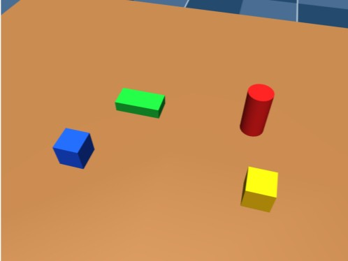
→
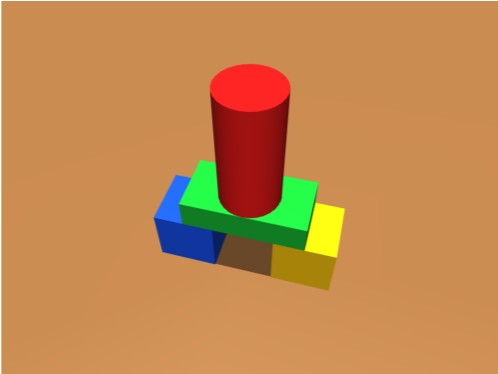
Bridge + cylinder
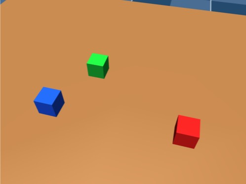
→
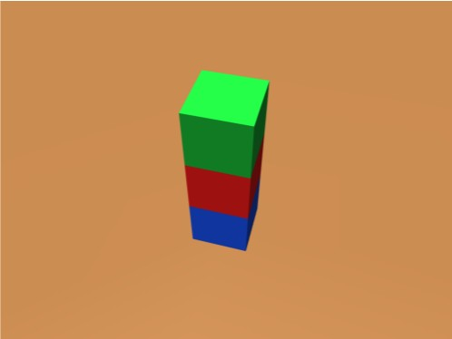
Three-cube stacking
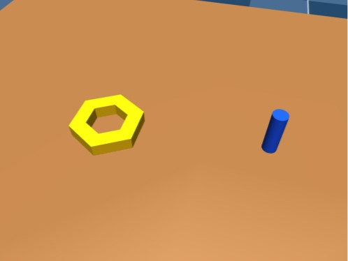
→
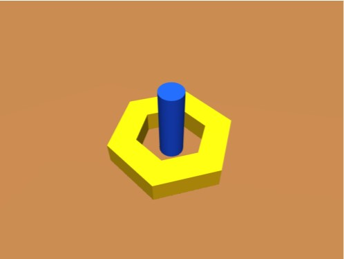
Ring-on-peg
Continuous online execution
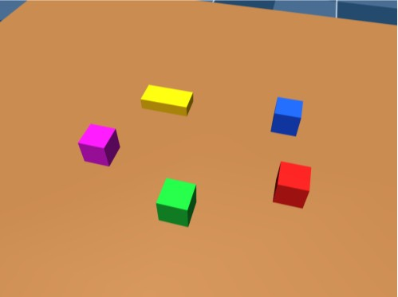
→
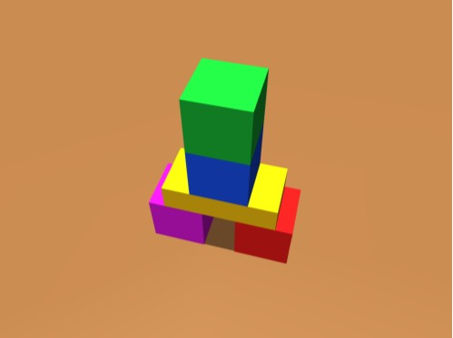
Bridge-tower
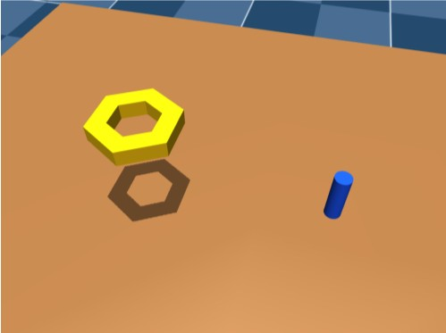
→
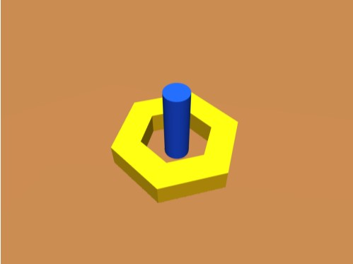
Ring-on-peg (after shared lift)
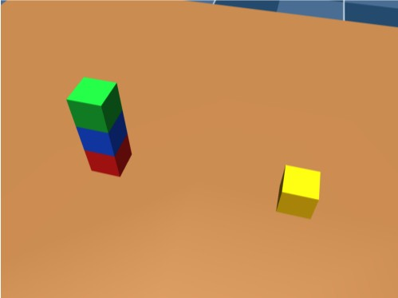
→
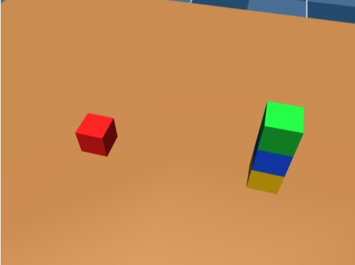
Tower relocation
Experiments
A simulated SO-100 arm with calibrated side and wrist RGB-D cameras. The pixel reasoning and geometric abstraction agents share the task specification, sensors, actuator and initial skills. Pixel reasoning works from the camera images; geometric abstraction additionally receives grounded geometric references and textual checkpoints. Neither ever sees simulator object poses or evaluator state.
1 Single-policy acquisition
The LLM revises an executable Python policy between reset rollouts (R0–R3), with no LLM calls during execution. There are five paired chains per task, and every revision is tested on the same 100 held-out layouts.
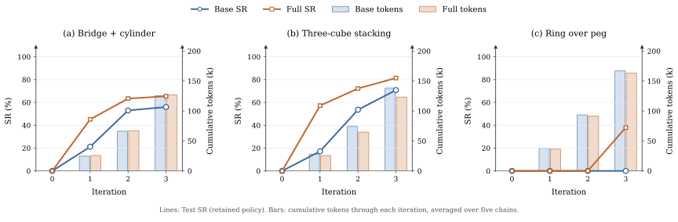
Lines show mean held-out success of training-retained policies; bars show cumulative tokens. On the construction tasks, geometric abstraction at R2 already beats pixel reasoning at R3 for about half the tokens. On ring-on-peg, only geometric abstraction succeeds (38% at R3).
2 Continuous online execution
The agent observes, reasons and acts in one continuing scene until it succeeds or hits a 200 s budget. Failed actions leave their consequences in place, and physics keeps running while the model thinks. We evaluate 50 paired layouts per task (300 episodes).
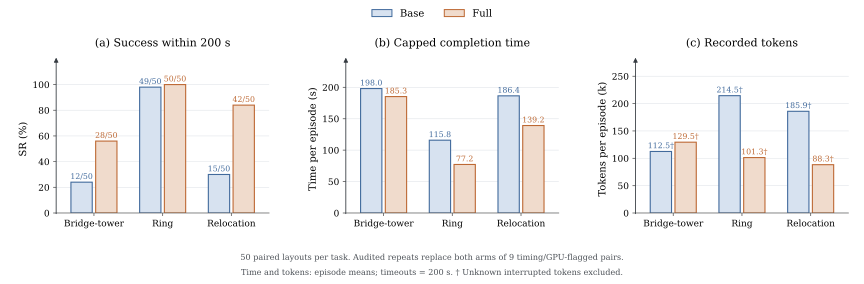
Geometric abstraction completes more episodes on Bridge-tower (28/50 vs. 12/50) and Tower relocation (42/50 vs. 15/50). On Ring, both succeed on almost every layout (50/50 vs. 49/50), but geometric abstraction finishes sooner on 45 of the 50 paired layouts.
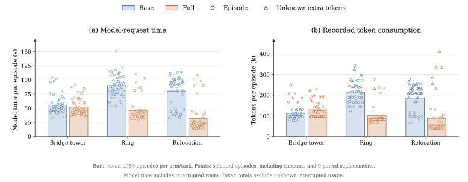
Model interaction cost per episode. Geometric abstraction attaches fewer images on all three tasks while local sensing keeps refreshing the geometry.
Inside an average tower-relocation episode
LLM request with imageLLM request, text only
Pixel reasoning186.4 s · 11.6 req · 11.3 img
Geometric abstraction139.2 s · 5.4 req · 3.0 img
0 s50 s100 s150 s200 s
Bars end at mean capped completion time (timeouts = 200 s); requests are rounded and evenly spaced for illustration. Means over 50 episodes per agent.
Online outcomes and cost over 50 paired layouts per task (means per episode; timeouts count as 200 s)
Task
Agent
Success
Time (s)
Model (s)
Tokens (k)
Requests
Images
Bridge-tower
Pixel reasoning
12/50
198.0
55.5
112.5
7.88
7.50
Geometric abstraction
28/50
185.3
51.8
129.5
7.32
4.28
Ring-on-peg
Pixel reasoning
49/50
115.8
90.0
214.5
11.88
10.94
Geometric abstraction
50/50
77.2
45.6
101.3
6.90
2.72
Tower relocation
Pixel reasoning
15/50
186.4
80.3
185.9
11.58
11.34
Geometric abstraction
42/50
139.2
31.7
88.3
5.36
3.00
Rollouts
Continuous demo rollouts of each task in the same simulated SO-100 setup, recorded for this page. They show the physical tasks, not the study's LLM agents: single-policy tasks use hand-written controllers from the repository, and the online tasks use scripted controllers. The result tables above report the actual study episodes. Sparse replays of real study episodes are in the code repository.
Single-policy tasks
Bridge + cylinder · 3× speedThree-cube stacking · 3× speedRing-on-peg · real time
Vision stays on, re-reading goes down. Local perception keeps the geometric state current, so the language model rarely needs a fresh image to decide.
Gains are task-dependent. Ring and Tower relocation roughly halve model time and tokens. Bridge-tower's higher success comes with 15.1% more tokens, so better completion does not require token savings on every task.
Scope is preliminary. These are simulated tasks with relatively simple object geometry. Real-world depth noise, occlusion and calibration error remain open, and we compare the full geometry-plus-feedback package rather than isolating its parts.
Looking ahead. Exposing grounded geometry as text could let fast text-only LLMs reason about physical scenes, and open a cleaner way to measure LLM spatial reasoning on verified geometric inputs.
Citation
@inproceedings{liu2026geometric,
title = {Do Agentic Policies Need to Look at Every Step? Geometric Abstraction for Reasoning and Action},
author = {Liu, Yihang and Chen, Yiming and Zheng, Mingzhe},
booktitle = {CoRL 2026 Workshop on Agentic Robotics},
year = {2026}
}